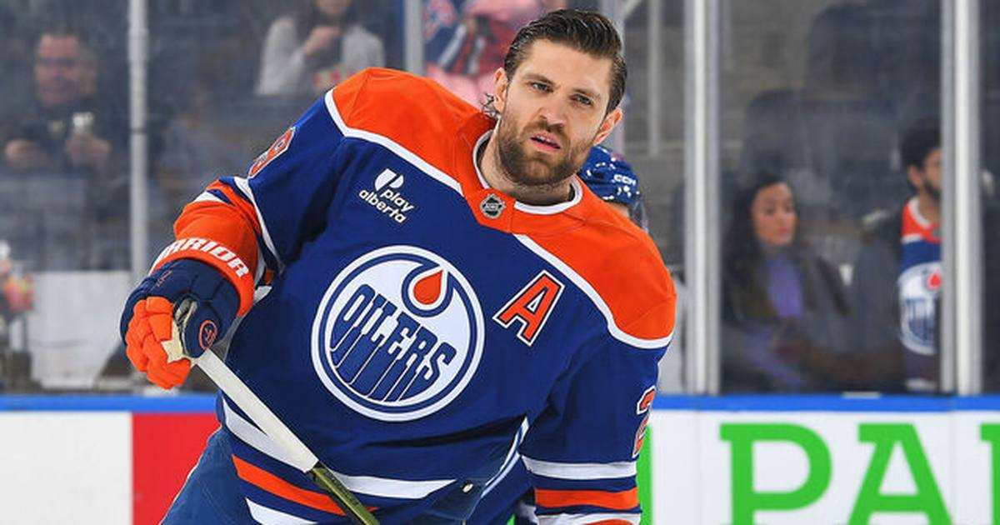

TSL Bets: Oilers-Rangers over 6.5 (-110) — the league's best offense meets a backup goalie
Connor McDavid goes for his 19th straight game with an assist tonight, the Oilers own the league's best attack, and the Rangers are without Igor Shesterkin — out for the season after knee surgery. Two teams that score, one goalie situation that doesn't scare anyone. Over 6.5 (-110) is the play.

The game
New York Rangers (10-7-1) at Edmonton Oilers (12-3-3) — 8:00 PM ET, Rogers Place, ESPN+
Oilers -156, total 6.5, moneyline Oilers -156 / Rangers +130 (FanDuel). The over is -112 at FanDuel and -110 on the consensus board. The Oilers are the No. 1 team in the Pacific at 12-3-3. The Rangers are No. 3 in the Metro at 10-7-1, on a three-game winning streak — but 1-5-1 on the road. The computer projection is 6.6 goals.
Injuries — Edmonton: Ryan Nugent-Hopkins is day-to-day after taking a puck to the head in Saturday's win over Vancouver — coach Mike Babcock said the initial fear was a broken jaw, but Nugent-Hopkins seemed to be doing OK and Babcock does not expect him to miss much time. Isaac Howard (knee) and Frederik Andersen (knee) are on injured reserve, along with Mattias Janmark, Alec Regula, and Matt Savoie. Zach Hyman returned Saturday after five games out with a neck injury.
Injuries — New York: Igor Shesterkin is on injured reserve after season-ending knee surgery — the Rangers' star goalie is done for the year, and Joonas Korpisalo, acquired from Boston on July 1, has yet to play this season because of a lower-body injury. Sean Durzi (lower body) is on injured reserve, Joe Veleno (lower body) is out long-term, and Alberts Smits is day-to-day.
Storylines: The headliner is McDavid. He has an assist in all 18 games Edmonton has played, tied with Adam Oates for the second-longest assist streak in NHL history, and tonight is game 19 — five away from Wayne Gretzky's record of 23. The Oilers are the league's highest-scoring team at over four goals a game, and McDavid (47 points) and Draisaitl (16 goals) are the two hottest players in the sport. Edmonton beat the Rangers 4-1 in New York on November 1, the night McDavid became the fastest player ever to reach 30 assists in a season. The Rangers have won three straight, including a 4-3 win at Seattle on Saturday, but their road record says they are a different team away from the Garden — and now they are doing it without their franchise goalie.
The bet
Oilers-Rangers over 6.5 (-110). This is a goals bet, not a side bet, and the matchup points one way. Edmonton scores more than anyone in the league. The Rangers score plenty themselves (over three a game) and are now defending with a backup goalie situation against the best attack in hockey. The total has sat at 6.5 all day, the models project 6.6, and the Oilers have been over four goals a game as a team. McDavid chasing history at home, in front of a crowd that knows what is on the line, is not the kind of night that ends 2-1.
The honest caveat
Totals at 6.5 are coin flips by nature, and the Rangers have won three straight by playing tighter hockey. If Nugent-Hopkins sits, Edmonton loses a top-six piece — though Babcock sounds optimistic. And the Rangers' road record is bad, but bad road teams sometimes play exactly one good defensive game, and this would be a bad night for it to happen. The over needs seven goals. Both teams are capable of scoring four on their own. That is the bet.
The pick
Over 6.5 (-110). A $10 ticket returns about $19.10. The league's best offense, a backup goalie, and a record chase at home.
If you or someone you know has a gambling problem, call 1-800-GAMBLER.
Sources
• Oilers vs Rangers NHL Prediction, Odds, Picks, Best Bets for Nov. 9 (FanDuel)
• Oilers vs. Rangers NHL Best Bets, Odds, Prediction and Pick – Nov. 9 (Bleacher Nation)
• NHL Injury Report Today: IR, Day-to-Day & Returns (Edgehalla)
• Red-hot Connor McDavid, Oilers host streaking Rangers (The Sports Animal)